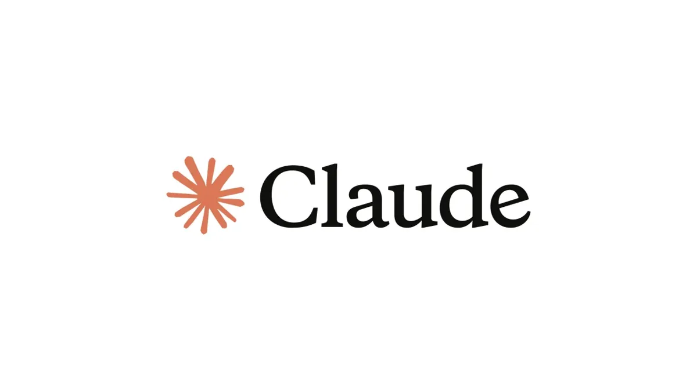

01 / Start with curiosity
The age of internet and technology has dawned on us.
Good tools begin with a question and make the next step easier to see.
02 / Use tools with purpose
Technology should support attention, not steal it.
Choose simple systems that leave more energy for meaningful work.

03 / Make room for what matters
Small improvements can change the shape of a day.
Build a calmer and more intentional relationship with technology.
04 / Take action
Start with one small step
Invite visitors to explore the guide or plan their next action.